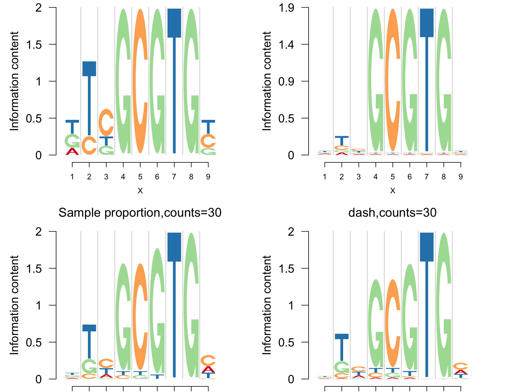

Last updated: 2017-11-14
Code version: 35656d9
Typically logo plots are used to represent the position weight matrix (PWM). However, the PWM is often generated from underlying position frequency matrix (PFM). PFM stores the compositional data - the frequencies of the symbols at each position. Given a PFM matrix however, we also have knowledge of the scale of the frequencies for each position. This additional information can be used to get a better logo plot representation compared to the usual PWM-based logo plots.
Suppose for a specific position in a sequence, the compositional data is \[ (A, C, G, T) : = (6, 1, 2, 1) \] and in another case, it is \[ (A, C, G, T) : = (600, 100, 200, 100). \]. We assume that the background probability is equal for the four bases. If we transform the positional frequencies into PWM by taking the sample proportion, then the estimated PWM would be same for the two cases and would correspond to the same logo plot representation. However, in the second case, we have a total frequency of 1000 for all symbols while for the first case, it is only 10. Hence, it makes sense to shrink the PWM estimate to the background probability more strongly in the first case than that in the second case.
This is what we accomplish in an adaptive fashion using dash (Dirichlet Adaptive Shrinkage). We discuss the model formulation next.
Assume that there are \(L\) constituents in the compositional mix. \(L\) equals \(4\) (corresponding to A,C, G and T bases) for the DNa sequence motif data and \(20\) corresponding to the amino acids for the protein sequence data.
Suppose there are \(L\) categories and \(n\) positions. We model these compositional counts vectors as follows
\[ (c_{n1}, c_{n2}, \cdots, c_{nL}) \sim Mult \left ( c_{n+} : p_{n1}, p_{n2}, \cdots, p_{nL} \right ) \]
where \(c_{n+}\) is the total frequency of the different constituents of the compositional data observed for the \(n\) th base. \(p_{nl}\) here represents the compositional probability for the \(l\) th base in the position \(n\). We have
\[ p_{nl} >= 0 \hspace {1 cm} \sum_{l=1}^{L} p_{nl} = 1 \]
We choose the Dirichlet prior distribution on the compositional probability vector \((p_{n1}, p_{n2}, \cdots, p_{nL})\). In order to perform adaptive shrinkage, we assume a mixture of known Dirichlet priors, each having mean to be the background mean probability vector ( {1}, {2}, , _{L} ), but with varying amounts of concentration, which need to be estimated along with the unknown mixture proportions from the data. \[ \left ( p_{n1}, p_{n2}, \cdots, p_{nL} \right ) : = \sum_{k=1}^{K} \pi_{k} Dir \left (\alpha_{k} \mu_{1}, \alpha_{k} \mu_{2}, \cdots, \alpha_{k} \mu_{L} \right ) \hspace {1 cm} \alpha_{k} > 0 \hspace{1 cm} \sum_{l=1}^{L} \mu_{l} = 1 \] We assume a prior of \(\pi_{k}\) to be Dirichlet
\[ f(\pi) : = \prod_{k=1}^{K} {\pi_{k}}^{\lambda_{k}-1} \]
We choose a default set of \(\alpha_{k}\) to be \((Inf, 100, 50, 20, 10, 2, 1, 0.1, 0.01)\). In this case \(\alpha_{k}=Inf\) corresponds essentially to point mass at the prior mean or background mean ( {1}, {2}, , _{L} ), and then the subsequent choices of \(\alpha_{k}\) have lower degree of concentration. \(\alpha_{k} = 1\) corresponds to the most uniform scenario, whereas \(\alpha_{k} < 1\) correspond to cases with probability masses at the edges of the simplex but with the mean at the prior mean. The latter components would direct the points close to the corners towards the corners and away from the center, resulting in clearer separation of the points closer to the mean with the ones away from it.
We choose the default prior amount of shrinkage of \(\pi_{k}\), namely \(\lambda_{k}\) to be \(\left( 1, 1, 1, 1, \cdots, 1 \right )\). The user may want to increase the weight on the first term (corresponding to ( _{k} = Inf ) ) to enforce stronger shrinkage.
We use the example of transcription factor, Aryl hydrocarbon receptor, to show the application of dash. Its PFM has 9 positions and each position has 154 counts, which is considerably large and hence the PWM computed for this data is reliable.
library(Logolas)
library(grid)
color_profile = list("type" = "per_row",
"col" = RColorBrewer::brewer.pal(4,name ="Spectral"))
scale1=function(x){return(x/sum(x))}
getpwm=function(pfm,bg=NULL,type='dash'){
if(is.null(bg)){bg=rep(1/nrow(pfm),nrow(pfm))}
pfm=as.matrix(pfm)
if(type=='pse'){
pseudo=sqrt(dim(pfm)[2])*bg
pwm=apply((pfm+pseudo),2,scale1)
}else if(type=='prop'){
pwm=apply(pfm,2,scale1)
}else if(type=='dash'){
pwm=dash(pfm,optmethod = 'mixEM',mode = bg)$posmean
}else{pwm=NULL}
if(nrow(pwm)==4){rownames(pwm)=c('A','C','G','T')}
if(nrow(pwm)==20){rownames(pwm)=c('A' ,'R','N','D', 'C' , 'Q', 'E' , 'G', 'H' , 'I', 'L' , 'K' , 'M' , 'F', 'P' , 'S' , 'T' , 'W', 'Y', 'V')}
colnames(pwm)=1:dim(pfm)[2]
return(pwm)
}
#sampling function
dashsample=function(pfm,n){
p=apply(pfm,2,function(x){
sam=sample(rep(c('A','C','G','T'),x),n,replace = F)
n_a=sum(sam=='A')
n_g=sum(sam=='G')
n_c=sum(sam=='C')
n_t=sum(sam=='T')
return(c(n_a,n_c,n_g,n_t))
})
rownames(p)=c('A','C','G','T')
return(p)
}
#pfm matrix
pfm=cbind(c(41,18,56,39),c(11,12,35,96),c(22,44,21,67),c(3,1,146,4),c(1,150,1,2),c(3,1,149,1),c(0,3,1,150),c(0,0,154,0),c(43,67,16,28))
rownames(pfm)=c('A','C','G','T')
colnames(pfm)=1:ncol(pfm)We use the PWM thus computed as true position weights and present a sequence logo for this matrix.
logomaker(pfm,color_profile = color_profile,pop_name = 'True Sequence logo')We do a sampling without replacement to simulate the cases when the number of counts is small. For each position, we sample 5 sequences and 30 sequences. We then compare the true sequence logos and EDLogo with those based on the PWM estimated by sample proportion and the PWM estimated by dash.
get_viewport_logo(2,2)
seekViewport(paste0("plotlogo", 1))
set.seed(35)
pfms=dashsample(pfm,5)
logomaker(pfms,color_profile = color_profile,newpage = F,pop_name = 'Sample proportion,counts=5')
seekViewport(paste0("plotlogo", 2))
logomaker(getpwm(pfms,type = 'dash'),color_profile = color_profile,newpage = F,pop_name = 'dash,counts=5')
seekViewport(paste0("plotlogo", 3))
pfms=dashsample(pfm,30)
logomaker(pfms,color_profile = color_profile,newpage = F,pop_name = 'Sample proportion,counts=30')
seekViewport(paste0("plotlogo", 4))
logomaker(getpwm(pfms,type = 'dash'),color_profile = color_profile,newpage = F,pop_name = 'dash,counts=30')
From the plot, we can see that when the counts are small, the shrinkage efects of dash are strong. The dash preserves the logos that have more information, e.g. position 4-8, while shrinks the heights of logos that do not show strong conservation. As the number of counts increase, the shrinkage efects are less strong while the sequence logos are more similar to the true plot.
This highlights why dash is an important tool to perform adaptive shrinkage of compositional data in case of low positional frequencies. The problem of low positional frequencies is highly relevant in Plant Transcription Factor Database PlantTFDB and in several tranacription factor motifs in HOCOMOCO.
sessionInfo()R version 3.4.2 (2017-09-28)
Platform: x86_64-apple-darwin15.6.0 (64-bit)
Running under: macOS Sierra 10.12.5
Matrix products: default
BLAS: /Library/Frameworks/R.framework/Versions/3.4/Resources/lib/libRblas.0.dylib
LAPACK: /Library/Frameworks/R.framework/Versions/3.4/Resources/lib/libRlapack.dylib
locale:
[1] en_US.UTF-8/en_US.UTF-8/en_US.UTF-8/C/en_US.UTF-8/en_US.UTF-8
attached base packages:
[1] grid stats graphics grDevices utils datasets methods
[8] base
other attached packages:
[1] Logolas_1.2.1
loaded via a namespace (and not attached):
[1] Rcpp_0.12.13 knitr_1.16 magrittr_1.5
[4] munsell_0.4.3 gridBase_0.4-7 SQUAREM_2017.10-1
[7] colorspace_1.3-2 rlang_0.1.4 stringr_1.2.0
[10] plyr_1.8.4 tools_3.4.2 parallel_3.4.2
[13] gtable_0.2.0 git2r_0.19.0 htmltools_0.3.6
[16] yaml_2.1.14 lazyeval_0.2.0 rprojroot_1.2
[19] digest_0.6.12 tibble_1.3.4 RColorBrewer_1.1-2
[22] ggplot2_2.2.1 evaluate_0.10.1 LaplacesDemon_16.0.1
[25] rmarkdown_1.6 stringi_1.1.5 compiler_3.4.2
[28] scales_0.4.1 backports_1.1.0 This webpage has been developed using RStudio's R Markdown and John D Blischak's workflowr package.